Sawarna
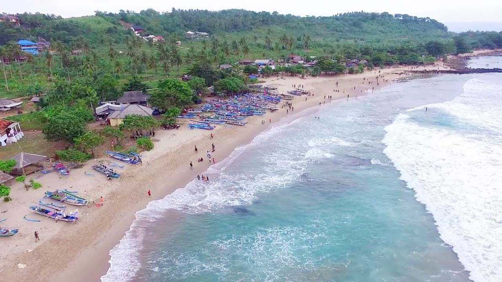
Destinasi Desa wisata Sawarna beach, memiliki berbagai jenis wisata yang bisa dinikmati. Ada pantai yang
indah, goa-goa yang cantik, alam yang masih asri, budaya yang masih dijaga, dan masyarakatnya yang ramah
tamah. Cakupan
wilayah wisata Sawarna cukup luas, terbentang mulai dari Pantai Pulo Manuk di sebelah barat sampai ke Pantai
Karang Taraje di sebelah timur, sajian bentang alam yang menawarkan aneka pemandangan mengagumkan. Laut
Sawarna
berhadapan langsung dengan Samudera Hindia, ini sebabnya ombak di tempat ini mengundang banyak para
peselancar.
Banyak yang mengira jika Sawarna masuk daerah kabupaten Sukabumi, dulunya memang betul sebelum terjadi
pemekaran daerah provinsi Banten pada tahun 2000-an, Sawarna masuk daerah Sukabumi. Untuk Saat ini Sawarna
masuk kabupaten
Lebak, Banten.
Sejarah
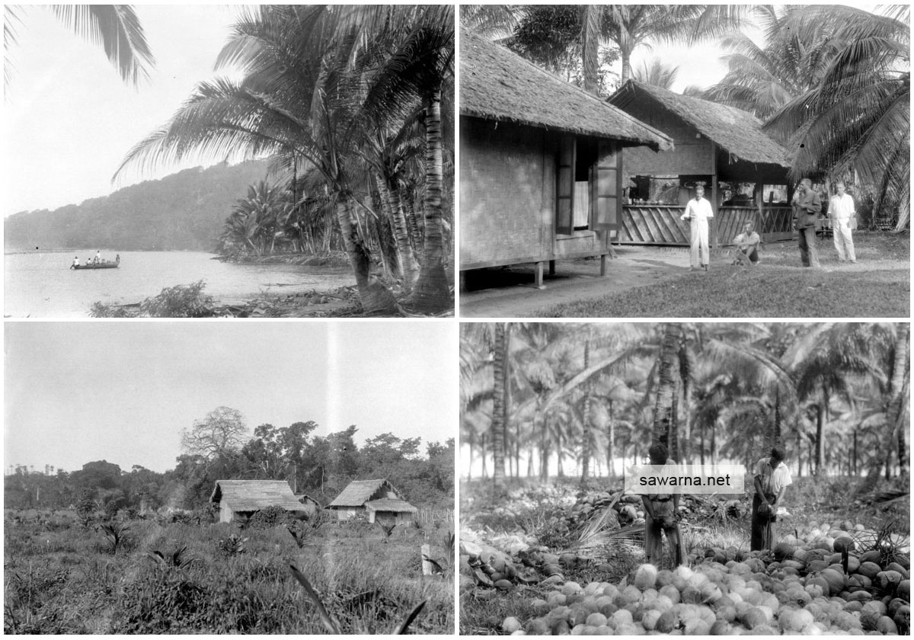
Sawarna memiliki histori masa lalu yang cukup menarik, dari asal muasalnya sampai dengan menjadi salah satu
tempat wisata unggulan di Lebak-Banten. Sejarah singkatnya sebagai berikut. Di desa ini terdapat sebuat
kuburan tua
dengan tinggi sekitar 1 meter berbentuk persegi, yang kedapatan sebagai tempat bersemayamnya jasad dari
seorang kebangsaan Belanda bernama Jean Louis van Gogh. Pada tahun 1907 Jean Louis membuka hutan belantara
Tanjung Layar –
Ciantir untuk dijadikan perkebunan kelapa seluas 54 hektare. Akhirnya memperkerjakan banyak penduduk pribumi
namun kebanyakan dari luar Banten, seperti dari jawa tengah dan sekitarnya. Seiring berjalannya waktu, jumlah
perkerja
yang semakin banyak, maka terbentuklah kelompok penduduk, yang kemudian membentuk sebuah perkampungan yang
diberi nama Sawarna. Namun karena adanya perbedaan logat dalam pengucapan, banyak yang mengartikan bahwa nama
tersebut
berasal dari bahasa Sunda yang artinya Sorana / Suaranya.
Jean Louis tapi memiliki mimpi untuk memajukan usahanya serta mengenalkannya ke kancah mancanegara, karena
melihat potensi jumlah penduduk yang semakin bertambah dan alam sekitar yang indah juga asri. Banyak warga
yang percaya
bahwa cita-cita Jean Louis akan jadi kenyataan, sekarang Desa wisata ini menjadi tempat yang banyak dikunjungi
wisatawan baik wisatwan lokal maupun wisatan internasional. Terbukti dengan banyak pelancong luar negeri yang
datang
sejak tahun 2000-an. Tidak bisa dipungkiri peran para penulis blog traveler sangat berpengaruh, berkat tulisan
yang mereka yang menceritakan pengalaman selama liburan, juga hasil foto yang indah, Sawarna mulai dikenal
oleh
wisatawan lokal, dari mulai goa, pegunungan, sungai, hingga pantai berpasir putih.
Destinasi Wisata
Desa Sawarna memiliki banyak destinasi wisata yang menarik untuk dikunjungi, setiap tempat memiliki
keunikannya masing-masing. Untuk mengunjungi semua wisata memerlukan waktu satu sampai dua hari, jadi sangat
disarankan untuk
menginap. Tempat yang tepat untuk menikmati indahnya langit sunrise adalah pantai Karang Beureum, Legon Pari,
dan Tanjung Layar. Untuk sunset bisa dinikmati di semua pantai. Jika cuaca sore hari bagus maka kita akan di
suguhkan
keindahan alam yang menawan.
Berikut tempat wisata yang wajib dikungjungi ketika liburan di Sawarna.
Pantai Tanjung Layar
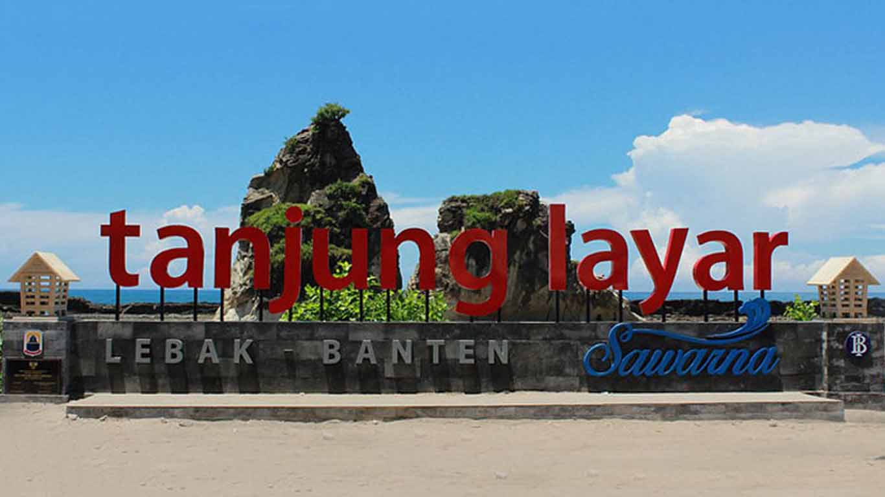
Pantai Tanjung Layar merupakan wisata unggulan yang dimiliki Sawarna, tempat yang wajib dikunjungi saat
liburan ke Sawarna. Yang menjadi ciri khas dari pantai ini yaitu terdapat sepasang karang berukuran raksasa
yang bentuknya
menyerupai layar kapal yang sedang terkembang, itu sebabnya tempat ini diberi nama Tanjung Layar. Selain
itu, ditempat ini terdapat gugusan karang yang menghampar yang menjadi area lapang saat air laut surut, juga
terdapat
batuan karang yang membentuk benteng menghadang ombak besar yang tidak henti-hentinya menghantam, yang
menjadi pemandangan alam yang menawan bagi para wisatawan yang berkunjung ke tempat ini. Pemandangan indah
bisa dinikmati
saat matahari terbenam (sunset), sehingga tempat ini sering sekali dijadikan sebagai tempat untuk kegiatan
fotografi.
Pantai Ciantir (Pasir Putih)
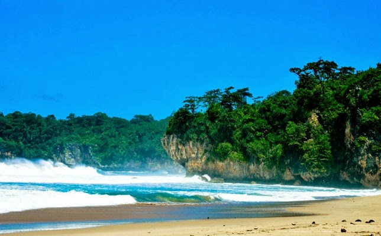
Pantai Ciantir merupakan Pantai di Sawarna dengan hamparan pasir putih terpanjang, ombak yang besar cocok
untuk olahraga selancar (surfing), namun tetap aman untuk berenang karena sudah ada penanda daerah yang
berbahaya dan
daerah mana yang aman untuk berenang, juga di pantai ini sudah ada tower pemantau dari tim life guard yang
siap mengarahkan, memantau serta menyelamatkan. Pasirnya yang putih serta terhampar luas menjadi ciri khas
pantai ini.
Banyak aktivitas yang bisa dilakukan seperti berenang, bermain pasir, berjemur, olahraga pantai dll.
Menjelang sore hari kita bisa menikmati indahnya langir sore(sunset). Di malam hari bisa membuat api unggun
atau bertenda. Di
tempat ini bisa dijadikan tempat untuk berbagai aktivitas dan acara.
Pantai Karang Taraje
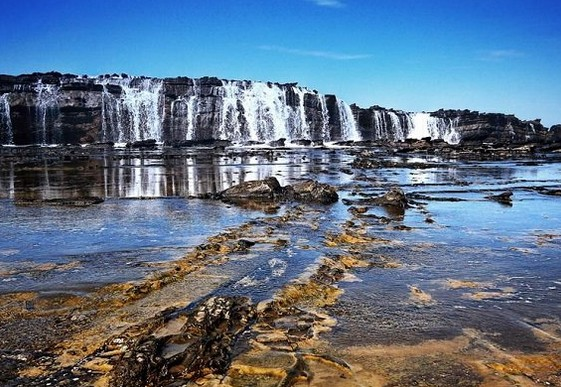
Untuk pantai yang satu ini berada sebelah timur setelah Pantai Legon Pari. Berbeda dengan pantai lainnya
yang memiliki hamparan pasir, Pantai Karang Taraje terdiri dari batuan karang besar yang saling bertumpukan
yang
menyerupai tangga('tangga' dalam bahasa sunda taraje), untuk sampai ke pantai ini harus berjalan sekitar 15
menit dari Pantai Legon Pari. Di atas karang semacam air terjun yang turun dari karang Taraje. Air terjun
tersebut
terbentuk dari debur ombak yang menghempas ke karang, namun hanya bisa melihatnya ketika ombak besar ya.
Namun yang harus diperhatikan adalah jangan sampai foto di bagian terjal, karena bisa berakibat fatal. Bisa
saja kan
ketika foto, tiba-tiba ada ombak besar yang bisa menghempaskan badan kita. Berfotolah di tempat yang
kira-kira memang aman.
Pantai Legon Pari
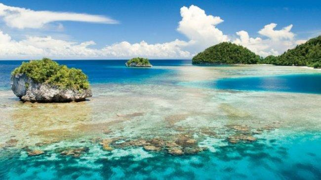
Pantai ini memiliki pasir dengan karakteristik lebih lembut, air laut yang biru, dan ombaknya pun cendrung
lebih tenang, sangat cocok jadikan tempat berenang. Jumlah wisatawan yang mengunjungi tempat ini masih
sedikit karena
minimnya informasi serta aksesnya yang cukup jauh. Walapun perjalanan menuju pantai ini cukup melelahkan
tapi akan terbayarkan dengan keindahannya. Oh ya di Pantai Legon Pari pun ada tim life guard yang bertugas
di hari sabtu
dan minggu, walapun tower pemantau belum dibangun. Sebenarnya pantai ini bisa di akses dengan jalan kaki
dari jalan utama, namun akan memakan waktu yang cukup lama. Disarankan lebih baik naik motor atau ojek lokal
saja agar
cepat sampai. Sesampainya di lokasi akan disuguhi pemandangan menakjubkan dari Pantai ini. Pasirnya yang
masih bersih serta suasana alam yang memang masih alami, tenang serta jauh dari hiruk pikuk dunia modern.
Pantai Karang Beureum
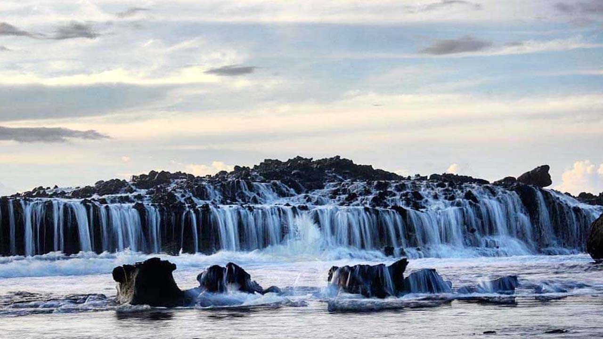
Dinamakan Pantai Karang Beureum, karena karang di tempat ini memiliki warna kemerah-merahan(beureum = merah
dalam bahasa Sunda). Saat air laut surut kita bisa menjelajahi area yang surut sampai 50 meter dari bibir
pantai.
Tempatnya hampir sama dengan Karang Taraje, karang mendominasi setiap sudut pantai ini, namun jumlah dan
ukuran karangnya relatif tidak terlalu besar. Karang di pantai ini banyak ditumpuhi lumut yang licin, jadi
harus berhati
- hati ketika berjalan diatasnya.
Pantai Goa Langir
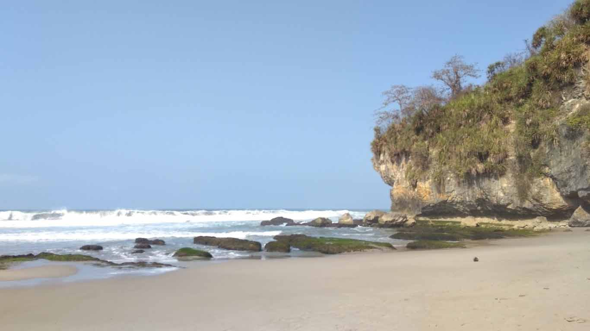
Salah satu pantai Sawarna yang lokasinya tersembunyi dan sedikit wisatawan yang tahu, jika rute yang
digunakan adalah Serang, Rangkasbitung, dan Cilegon maka Pantai Goa Langir berada tepat setelah Turunan
Cariang Sawarna.
Selain pantai yang asri, goa - goa yang menembus tebing dengan batuan stalagtit dan stalagmit yang terbentuk
sejak ratusan tahun lalu sangat layak untuk dikunjungi. Goa Langir merupakan tempat wisata yang akan pertama
kali
dilewati jika mengambil rute dari arah Malingping, karena letaknya yang begitu dekat dengan tanda bahwa
sampai di Sawarna. Tepat di bawah tanjakan cariang, disanalah surga ini tersembunyi. Di area ini terdapat
beberapa goa
dengan nama yang berbeda, berikut beberapa goa yang terdapat di tempat wisata ini :
Goa Langir
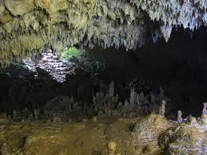
Sejarah kenapa Goa ini dinamakan Goa Langir, Langir itu berasal dari bahasa Sunda yang artinya Kalajengking.
Pengunjung tak perlu panik, meski namanya Goa Kalajengking tapi bukan berarti didalamnya banyak
kalajengking. Didalam
Goa banyak air yang menetes dari dinding tebing, bentuk bebatuan yang terlihat simetris namun ada juga yang
tak beraturan. Ruangan yang gelap dan bebatuan yang besar dan basah.
Goa Seribu Candi
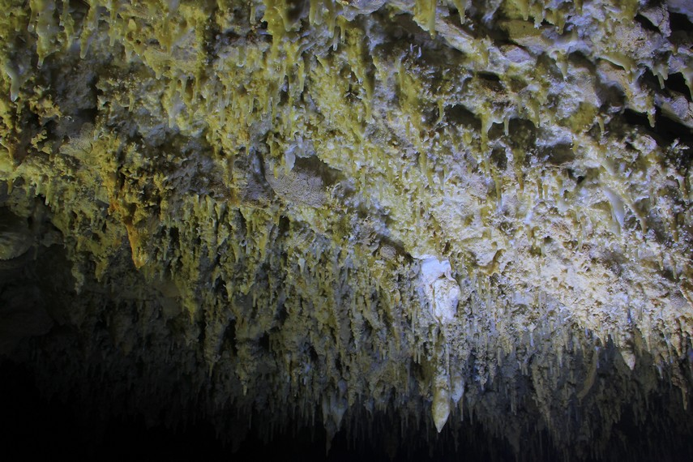
Goa ini bernama Seribu Candi karena banyaknya batuan stalagmit yang mirip dengan stupa candi. Saking
banyaknya mungkin sehingga dinamakan Goa Seribu Candi. Meski memiliki lorong yang pendek namun didalam goa
ini terdapat
banyak ornamen alam yang indah.
Goa Kenakes
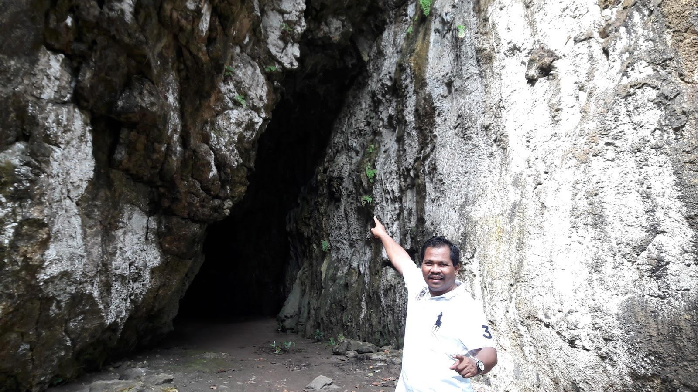
Kanekes merupakan nama daerah tempat suku Baduy tinggal, letaknya berada di pedalaman Banten tepatnya di
Kanekes, Leuwidamar, Lebak, Banten. Goa ini dinamakan Kanekes karena dahulu orang-orang Baduy sering
berkunjung ke goa
ini untuk mengambil sarang walet dan kelelawar. Goa berbentuk horizontal ini memiliki panjang kurang lebih
sekitar 85 meter.
Goa Harta Karun
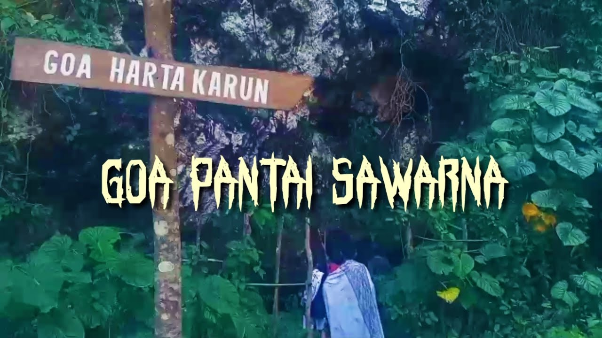
Pada Jaman dahulu Goa ini dimanfaatkan penjajah Jepang untuk menyimpan harta rampasan. Namun tidak ada
satupun orang yang tahu kemanakah harta rampasan itu sampai sekarang. Bentuk dalam goa ini kurang menarik
seperti Goa yang
lainnya, terlihat di bagian depan Goa yang ditumbuhi vegetasi hijau.
Pantai Karang Bokor
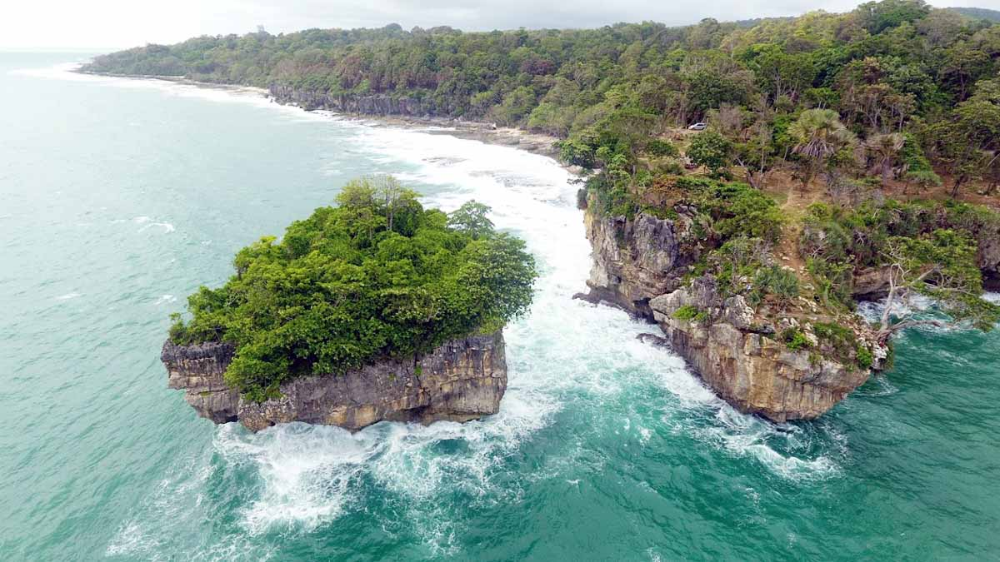
Yang menjadi ciri khas Pantai Karang Bokor adalah adanya pulau dari karang yang diatasnya ditumbuhi berbagai
jenis tanaman khas pantai. Karang bokor memiliki pemandangan yang bagus, tempat ini baru dibuka untuk umum
sekitar
pertengahan 2017. Untuk sampai ke pantai ini para wisatawan disarankan harus dengan Tour Guide atau penduduk
setempat. Karang ini sangat mencolok karena memang terpisah dari daratan dan tidak ada akses untuk
mencapainya. Namun
akhir-akhir ini pengelola membuat sebuah akses tepatnya di Leweung (Hutan) saketeng agar wisatawan dapat
melihat lebih dekat bentuk dan keindahan dari karang ini. Wisatawan yang mengunjungi Karang Bokor biasanya
hanya bersifat
musiman, karena pada hari-hari biasa akses menuju lokasi sangatlah sulit karena pembersihan akses yang tidak
dilakukan secara rutin. Menjelang hari besar dan libur panjang barulah akses jalan diperbaiki. Karang Bokor
menawarkan keindahan yang akan memanjakan mata, Suasana diatas tebing yang menghadap ke karang bokor dan
lautan lepas serta suara deburan ombak yang sangat keras terdengar cukup nyaring di telinga. Namun perlu
hati-hati
khususnya saat sedang berfoto, jangan terlalu mendekati tempat yang terjal karena beresiko jatuh.
Pantai Pulo Manuk
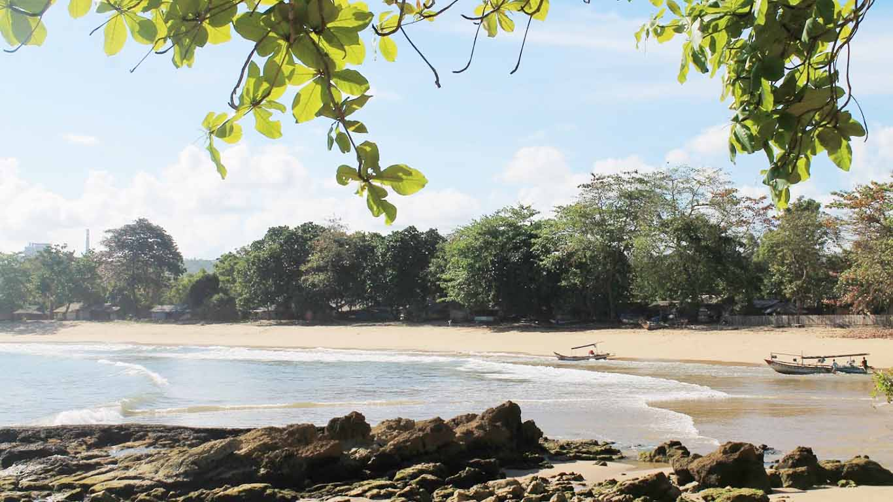
Untuk pulau (pulo) manuk berada di tengah-tengah laut, yang menjadi sarang bagi sekawanan burung untuk
bertelur dan berkembang biak, tapi sekarang sangat jarang ditemui burung – burung tersebut. Di Pantai Pulo
Manuk kita bisa
menemui sekawanan monyet dengan jumlah yang cukup banyak. Aktivitas memberi makanan kepada monyet merupakan
pengalaman seru yang harus dicoba saat datang ke tempat ini. Karena letaknya yang berdekatan dengan Leweung
(hutan)
Saketeng, tempat ini masih terlihat rimbun serta masih banyak hewan seperti kera dan lutung yang turun ke
jalan. Tidak perlu takut, mereka tidak liar kok. Biasanya wisatawan yang tertarik sering memberi kera
makanan ringan
seperti kacang atau sekedar air minum. Selian itu, di Pantai Pulo Manuk pula terdapat spot berenang yang
sangat mengasyikkan. Ombak di Pantai ini sangat tenang, jadi sangat mendukung untuk bermain air. Tidak jauh
dari bibir
pantai, terdapat sebuah karang yang besar . Wisatawan bisa mencapainya hanya saat air surut saja, atau bisa
juga menyewa perahu nelayan untuk sekedar melihat lebih dekat karang tersebut.
Bukit Cariang
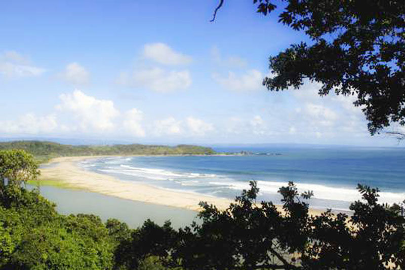
Tempat yang pertama kali muncul ketika melalukan pencarian kata “Sawarna” di google image di tahun 2000-an,
gambar tempat ini juga yang mungkin menjadi daya tarik para wisatawan kala itu. Dari Bukit Cariang kita bisa
melihat
Panjang Pesisir Pantai Sawarna secara keseluruhan. Tempat yang cocok untuk menikmani pantai dari ketinggian,
tempat bersantai sambil menikmati kelapa muda. Di tempat ini juga bisa temui banyak monyet liar. Tanjakan
Cariang
sebenarnya bukan destinasi utama, namun keindahannya pun tak bisa terlewatkan begitu saja. Biasanya tanjakan
cariang ini sering dijadikan tempat beristirahat para turis yang baru sampai ke sawarna. Namun karena bentuk
tanjakan
yang sangat miring dan berbeda dengan tanjakan pada umumnya menjadikan daerah ini rawan akan kecelakaan.
Jadi, jika melewati tanjangan ini, diharapkan untuk lebih berhati-hati. Di Tanjakan cariang terdapat sebuah
warung kopi
sederhana yang bisa digunakan untuk sekedar menikmati mie atau segelas kopi. Duduk di warung yang mengarah
terjal ke arah lepas pantai dibawah begitu Indah. Dari Tanjakan Cariang juga kita bisa melihat bentuk
Tanjung Layar
serta Pantai Ciantir dari jauh. Dikala malampun tak kalah indahnya, lampu lampu dari arah pantai akan
terlihat di Tanjakan Cariang ini, menjadikan malammu lebih romantis jika duduk bersama pasangan.
Goa Lalay
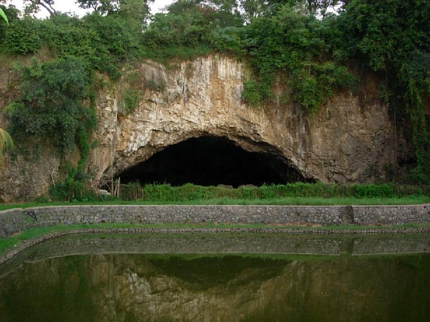
Goa Lalay merupakan salah satu destinasi yang ada di Sawarna, lokasinya berada di Kp. Cipanas Desa Sawarna,
di dalam Goa Lalay ini terdapat batuan stalaktit dan stalakmit yang menghiasi langit – langit dan seisi goa
dengan
jumlah yang cukup banyak, ini jadi salah satu alasan kenapa banyak wisatawan yang datang kesini. Goa Lalay
memiliki kedalam lebih dari 1000 meter, tapi kita tidak bisa masuk hingga kedalam tersebut, untuk wisatawan
hanya
disarankan sampai kedalam 200-400 meter. Goa ini termasuk unik, karena hampir semua dasarnya terendam air
setinggi betis orang dewasa. Ketika pertama kali melangkah masuk akan dimanjakan dengan pemandangan
stalaktit dan
stalakmit yang telah terbentuk selama puluhan hingga ratusan tahun lalu .Goa Lalay ini tidak sepopuler
wisata lain yang ada disawarna, dari sekian banyak tempat wisata mungkin Goa ini yang paling tersembunyi dan
tidak
diketahui banyak orang. Hal itu bisa dilihat dari jarangnya wisatawan yang datang ke kawasan ini. Batuan
yang ada di dalam goa begitu sangat menakjubkan. Yang menjadi masalah utama menuju goa indah ini yaitu
aksesnya yang
kurang memadai dan tidak jarang pula kita akan menemukan lintasan yang terjal, jadi kita perlu berjuang
sedikit keras untuk sampai ke Goa Lalay. Karena belum terlalu banyak fasilitas yang tersedia di lokasi
tersebut, saya
sarankan membawa bekal makanan, minuman serta kotak P3K untuk mencegah cedera ringan di Perjalanan.